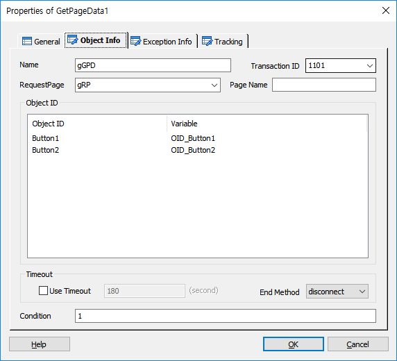
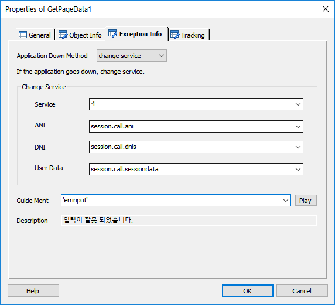
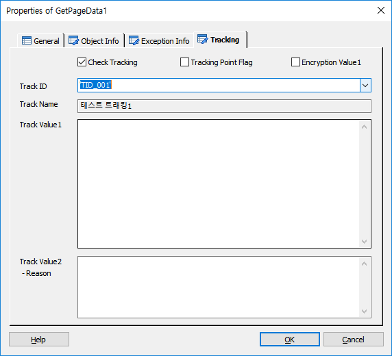

웹 페이지(HTML 파일)에서 입력된 값을 웹 서버에 요청하여 받습니다.
ICON

PROPERTIES
 Object Info
Object Info

Name : 아이템 이름을 입력합니다.(입력변수에 접근 할 때 사용 됩니다)
Transaction ID : TB 에서 전문을 전송할 대상(iWeb-Adapter)을 찾기 위한 서버 키 입니다.(ForCus v5.0.1 이상 부터는 필수 입력)
RequestPage : RequestPage Item 의 이름을 지정 합니다.(지정한 HTML, JSON의 입력 Object ID 사용)
Object ID
Object ID : HTML, JSON파일에 정의된 입력 Object ID 입니다.
Variable : Object ID 로 만든 입력 변수 입니다..
Timeout
Use Timeout Check Box : 입력 타입아웃의 사용 여부를 체크 합니다.(체크 하지 않으면 무한 대기)
Condition : 아이템의 실행 조건을 설정 합니다.
 Exception Info
Exception Info

Application Down Method : 앱 다운 시에 처리할 방법입니다.(disconnect, change service, next)
Change Service
Service : 새롭게 전환할 시나리오 서비스 아이디 입니다.
ANI : 새로운 시나리오에 전달할 ANI(발신번호) 정보를 지정 합니다.(WaitInbound의 ANI Info에 전달)
DNI : 새로운 시나리오에 전달할 DNI(서비스 번호) 정보를 지정 합니다.(WaitInbound의 DNI Info에 전달)
User Data : 새로운 시나리오에 전달 할 사용자 데이터를 지정 합니다.(WaitInbound의 User Data에 전달)
Guide Ment : 앱 다운 시 어떠한 처리를 하기 전에 Play할 Ment를 지정합니다.
Play Button : Guide Ment로 지정된 멘트를 재생합니다.
 Tracking
Tracking

Page의 입력한 값을 트래킹을 처리합니다.
Check Tracking Check Box : Tracking을 사용 할 것인지를 체크합니다.
Tracking Point Flag Check Box : 특별한 Tracking Flag를 설정하여 SWAT에서 트래킹 시에 이 플래그가 설정된 항목만 트래킹 할 수 있습니다.
Encryption Value1 Check Box : Track Value1 속성 데이터에 대해서 암호화 처리를 합니다.
Track ID : 정의한 Track ID를 선택하거나 입력 합니다.
- DefineTrack Item에 정의된 Track ID가 콤보박스 리스트로 제공됩니다.(Type이 없거나, GetPageData인 경우)
Track Name : Track ID를 선택하면 같이 정의된 이름을 출력합니다.(SWAT에서 이 이름으로 트랙킹 시에 사용합니다.)
Track Value1 : 트래킹 시에 사용할 값을 입력 합니다.(값이 없으면 Page에 입력한 값을 담은 변수가 기본 값이 됩니다.)
Track Value2 :트래킹 시에 사용할 값을 입력 합니다.(결과에 대한 Reason값)
RESULT
· 처리 결과 세션 변수
session.command.result : 처리 성공(_SLEE_SUCCESS_), 실패(_SLEE_FAILED_)
session.command.reason : 실패면 실패 오류코드(시스템 상수 참조)
· 아이템 속성 변수(@name 은 Name 항목에서 지정한 이름)
@name.변수 : Object ID 로 자동으로 생성된 변수
RELATED